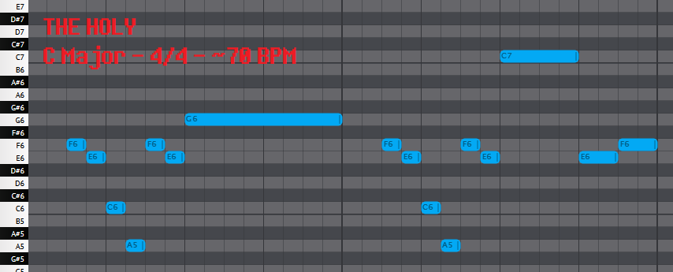
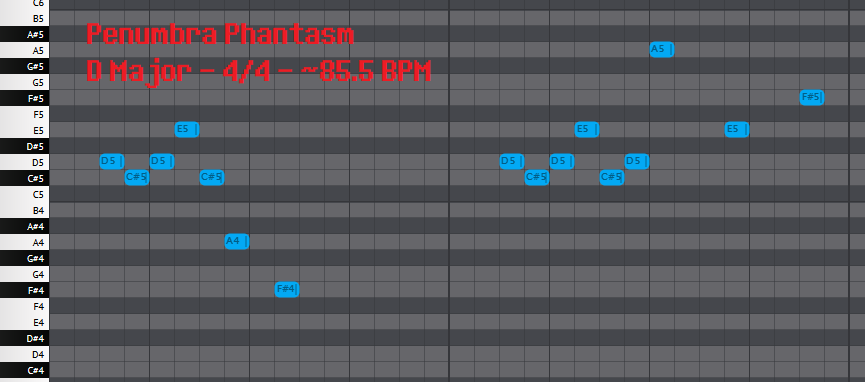

Appearances
THE HOLY
'THE HOLY (BACKING)': 0:00-0:06
'THE HOLY (+ BACKING)': 0:06-0:47
Before the Story
'THE HOLY (BACKING)': 0:59-1:24
Whether or not this quote is intentional is debatable, but I'm inclined to think it is, given the similar modulation and repeated crescendo of the motif.
(See also: 'Once Upon a Time ')
Faint Glow
In Faint Glow , 'Don't Forget A ' appears with alongside a particular melody.
This melody is similar to both 'THE HOLY A' (in terms of rhythm) and 'THE HOLY B' (in terms of the descending structure), and even has a backing with a similar crescendo and the exact same sleigh bells from THE HOLY .
The only problem?
It's not 'THE HOLY'.
The descent is similar to 'THE HOLY B' and there's no doubt the song is meant to be reminiscent of THE HOLY , but the melody itself is fairly different:
Faint Glow , 0:00-0:51)
THE HOLY )
Regardless, whether or not they're melodically the same is actually somewhat irrelevant; this index focuses on melodic leitmotifs, but motifs can also be intruments and other patterns.
In that way, although Faint Glow does not truly contain 'THE HOLY', it certainly does reference THE HOLY , if that makes sense.
flashback_excerpt.ogg
'THE HOLY A': 0:16-0:31
Reunited
Since this article is already covers a few edge cases, let's go all out with Undertale 's Reunited :
'THE HOLY A': 2:42-3:56
A transcription reveals intervals of:
Reunited ,
THE HOLY , and
flashback_excerpt.ogg .
Although it may seem like an interesting connection at first glance, I think this quote isn't all too likely to be intentional.
Some of the intervals are there, but the key [-5 to +10] ending isn't, and there's little else in support of the argument.
Given that, this quote simply isn't strong enough to carry the weight of " 'THE HOLY A' originates from Undertale " on its shoulders.
Penumbra Phantasm
Penumbra Phantasm has quite the storied history - originally composed by Toby Fox for Homestuck
Eventually however, it appears that part of its melody was re-fitted for use in Deltarune as 'THE HOLY B'; take a listen:
'THE HOLY B': 1:06-1:31
'THE HOLY B' as heard in THE HOLY , for reference:
Later in the song, the melody appears in a slightly different form with a noticeably different ending:
'THE HOLY B': 1:54-2:18
Notably, Penumbra Phantasm also contains the 'Doctor' leitmotif used throughout Homestuck .
Patient , another track Toby Fox composed, and the apparent origin of the 'Another Medium ' leitmotif.
Also worth mentioning are Noisemaster and Nightmare Knight - they were composed by Toby Fox as fan-made character themes for the web comic Cucumber Quest Metal Crusher ' and 'The Door ' leitmotifs.
Oh wait, I didn't talk about the quote itself at all.

('THE HOLY B', as heard in THE HOLY )

('THE HOLY B', as heard in Penumbra Phantasm )
'THE HOLY B' has intervals of:
Penumbra Phantasm 's quote has intervals of:
Obviously Penumbra Phantasm 's quote is more complex, but it tells a similar story:
Penumbra Phantasm 's [-1 +1 +2 -3 -4 -3] intervals work as a more complicated form of 'THE HOLY B's [-1 -4 -3] intervals.
Penumbra Phantasm then pulls the same trick, turning 'THE HOLY B's [+8 -1 +8 -8 +1] intervals into intervals of [+8 -1 +1 +2 -3 +1 +7].
Penumbra Phantasm once again complicates a [-1] interval into [-1 +1 +2 -3], before slicing a [+8] interval into a set of [+1 +7] intervals.
Finally, both melodies end on a harsh fall followed by a short jump:
Penumbra Phantasm .
Overall, the melodies are very similar, especially considering the perfectly maintained sequence of [-4 -3 +8 -1] in both.
Of course, the melody is much more complicated and the ending is noticeably different than 'THE HOLY B's, but the overall sound of the melody is preserved.
Further, I argue it'd make sense for the melodies to be different in this way: the melody has been adapted for a significantly different song in wholly different project, so it makes sense that they'd have some differences, even in expressing the same motif.